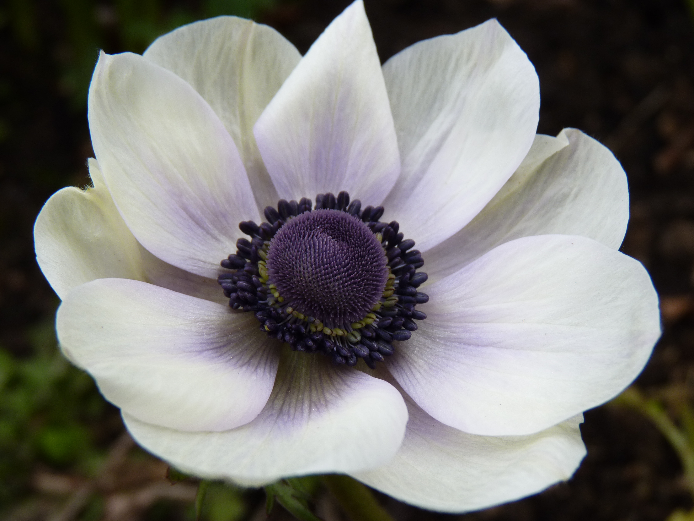

NERGİS ÇİÇEĞİ
Bu çiçeğin hikayesi aslında çok ilginç. Dilden dile anlatılır yıllar boyunca. Zamanın birinde inanılmaz güzellikte, bakanları bir daha kendine baktıran bir genç oğlan varmış. Ama bu oğlanın bir laneti varmış. Annesi ona demiş ki “Eğer kendine bakmaya çalışmazsan upuzun bir ömür yaşayacaksın, aksi takdirde çok kötü sonuçları olacak.” Tabii bizim yakışıklı oğlan annesinin sözünü dinlememiş ve bir nehir kenarına gitmiş. Nehirde kendi yansımasına bakmaya çalışmış ve gördüğü görüntüye aşık olmuş. Nehirdeki yansımasına ulaşmaya çalışırken dengesini kaybetmiş ve maalesef nehire düşmüş boğularak hayatını kaybetmiş. Fakat bu gencin öldüğü yerde çok güzel bir çiçek çıkmış. Bu çiçeğe de boynu bükük, yere bakan Narcissus, yani Nergis demişler.
AĞLAYAN GELİN ÇİÇEĞİ
Aynı zamanda Ters Lale adıyla da bilinen ve Hakkari’nin Cilo Dağları’nda yetişen Ağlayan Gelin çiçeği dünyanın en nadir bulunan çiçeklerinden biridir. Bu çiçeğin adının ise farklı kültürlere göre farklı hikayeleri vardır. Hristiyan aleminin inanışına göre İsa çarmıha gerilmeye götürülürken yolundaki bütün çiçekler saygılarından eğilmiş, boyunlarını bükmüşlerdir. Fakat sadece Ters Lale dik durmuştur. İsa’nın çarmıha gerilirkenki bakışları altında ezilen çiçek başını eğmiş ve o gün bu gündür ağlarmış. Hristiyanlara göre bu çiçek bu nedenden dolayı kutsal kabul edilir. Bir diğer hikaye de der ki Hakkari bölgesinde yaşayan Asuriler her sabah ortasında su biriktirdiğinden dolayı bu çiçeğe Ağlayan Lale derlermiş. Aynı zamanda Asuriler de bu çiçeği kutsal kabul ederlermiş. Günümüzde ise çok değerli ve koruma altına alınmış bir çiçektir Ters Lale. Bir diğer isimleri de Kejan Lalesi, Kerbela ve Kral Lalesi’dir bu çiçeğin.
İRİS ÇİÇEĞİ
Yunan Mitolojisine göre Zeus ve Hera’nın habercisi olan gökkuşağı Tanrıçası İris cennetten aldığı haberleri gökkuşağının içinden geçerek dünyaya taşırmış. Zaten Latince’de İris de “Cennetin Gözü” anlamına gelirmiş. İris çiçeği de taşıdığı renkler ve çizgiler nedeni ile adını gökkuşağı tanrıçası İris’ten almış. Eski Yunan’da bir inanca göre de gözlerimizin renkli kısmına İris adı verildiğinden her insanın cennetten bir parça taşıdığı söylenirmiş.
ANEMON ÇİÇEĞİ
Adını yine Yunan Mitolojisinden almış bir çiçeğimizde sıra, Anemon ya da bizim bildiğimiz adıyla Manisa Lalesi. Aşk tanrıçası Afrodit ve ölümlü Adonis birbirlerine sırılsıklam aşıklarmış. Fakat aşklarının önünde çok büyük bir engel varmış: Afrodit’in eski sevgilisi savaş tanrısı Ares! Kıskançlığının yanı sıra bir ölümlü olduğu için Adonis’ten nefret eden Ares bir gün Adonis’i avlanırken yakalar ve vurur. Bunu duyan Afrodit hemen sevgilisinin yanına gider fakat Adonis çoktan hayatını kaybetmiştir. Onu ölüler diyarına götürmeden önce bir törenle vücudunu güzel kokular ile ovalar Afrodit. Ölüler diyarına olan yolda Adonis’in kanları yere dökülür ve bu kan damlaları kokular ile birleşerek döküldüğü yerde çiçeklere dönüşür. İşte bu çiçeklere de Adonis ve Afrodit’in aşkı anısına Anemon adı verilir.
LALE
Lale’nin hikayesi de bir aşk hikayesine dayanır, hem de çok yakından bildiğimiz bir aşk hikayesine: Ferhat ile Şirin! Rivayetlere göre Şirin’e olan aşkından perişan olup çöllere düşen Ferhat hüzün içinde dolaşırken aşkı uğruna döktüğü her gözyaşı damlası kan kırmızısı birer çiçeğe dönüşürmüş. İşte bu çiçeğe de Lale adı verilmiş. Lale aslında Anadolu’da yüzyıllar boyu bahçelerin baş tacı olmuş bir çiçektir, hatta Osmanlı İmparatorluğu’nun bir dönemine ismini bile vermiştir. Fakat Osmanlı İmparatorluğu’nun çökmesi ile Anadolu’da da unutulan çiçek bir süre sonra Hollanda’da tekrar önemini kazanmış ve hatta oranın simgesi haline gelmiştir. İşin ilginç tarafı ise Lale’nin en başında Hollanda’ya Osmanlı padişahları tarafından hediye olarak gönderilmiş olmasıdır.
SÜMBÜL ÇİÇEĞİ

Birçok çiçeğin olduğu gibi Sümbül’ün de hikayesi mitolojiye dayanıyor. Çok eski zamanlarda Spartalı, inanılmaz yakışıklı, son derece ilgi çekici bir genç varmış. Bu gencin adı Hyacinthus’muş. Tabii Hyacinthus bu kadar ilgi çekici olunca hayranı da çok oluyormuş: Hem güneş tanrısı Apollon hem de batı rüzgarının tanrısı Zefirus kör kütük aşıkmış Hyacinthus’a ve onun kalbini kazanmak için bir disk atma yarışı yapmaya karar vermişler. Hikayenin buradan sonrası farklı kaynaklara göre ikiye ayrılıyor: İlk hikayemiz şu şekilde, yarışma sırasında Apollon yanlışlıkla Hyacinthus’u diskle vurur ve zavallı genç oracıkta hayatını kaybeder.İkinci hikaye ise şöyle der; Zefirus çok kıskançtır ve Apollon’un kazanmasını istemez. Bu yüzden de Apollon’un atış yaptığı sırada rüzgar çıkartır ki Apollon başarılı bir atış yapamasın, fakat işler düşündüğü gibi gitmez ve Apollon’un attığı disk gence isabet ederek ölümüne neden olur. Her iki hikayenin sonu da hüzünlü olduğundan dolayı o yakışıklı ve talihsiz gencin anısına bu güzel çiçeğe Hyacinthus yani bizim bildiğimiz adıyla Sümbül ismini verirler.